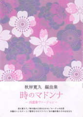
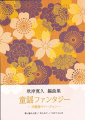

iTunes Store で作品を配信中
「螺旋」「邦楽器のためのコンポジションII」など。日本音楽集団ホームページの「楽曲販売」からお求めください。
邦楽器のための音楽を、
書いています。
箏・尺八・三味線・琵琶。日本音楽集団の作曲家として、協奏曲から歌謡曲のメドレーまで、邦楽器が生きる一曲をお届けします。
楽器の名前を押すと音が鳴ります。その楽器で書いた作品もご紹介します。
NEWS
「螺旋」「邦楽器のためのコンポジションII」など。日本音楽集団ホームページの「楽曲販売」からお求めください。
大日本家庭音楽会より発売中。尺八・箏の四重奏で、よく知られた歌をお楽しみいただけます。
SCORES

四重奏（尺八・箏２・十七絃）／縦譜
米澤浩氏・熊沢栄利子氏 委嘱作品
四重奏（尺八・箏２・十七絃）／縦譜
米澤浩氏・熊沢栄利子氏 委嘱作品

四重奏（尺八・箏２・十七絃）／縦譜
埼玉県 子どものための文化芸術出前事業 委嘱作品
PROFILE
CONTACT
お気軽にメールでご連絡ください。
akg01248@gmail.com